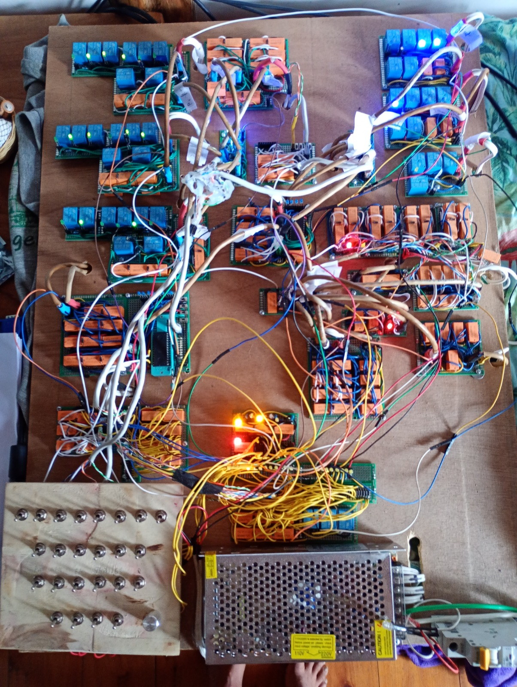
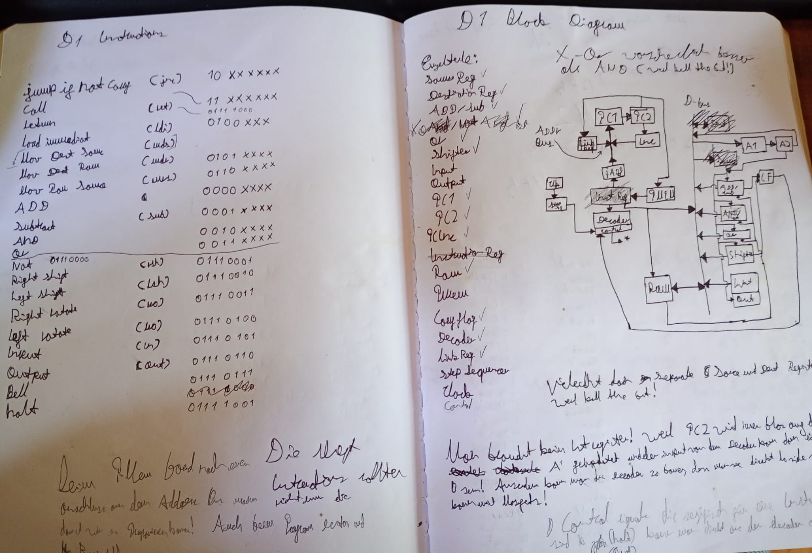
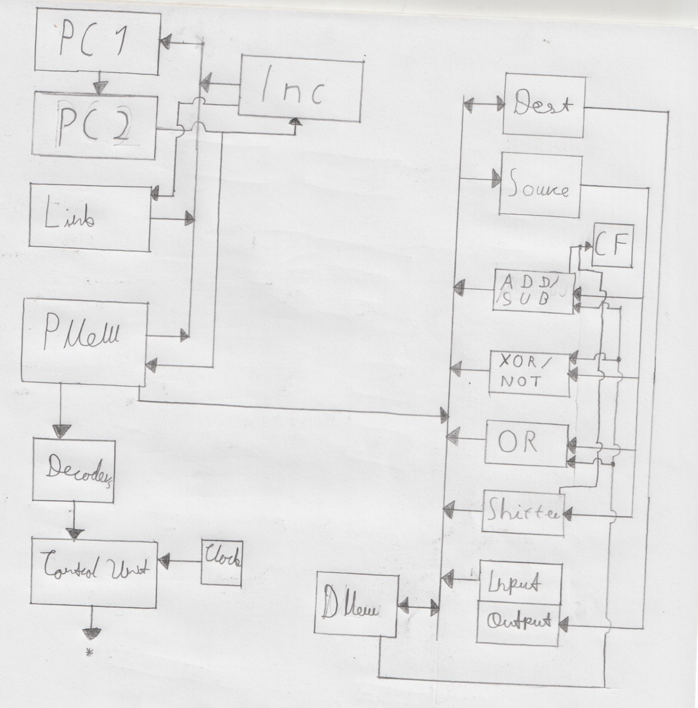
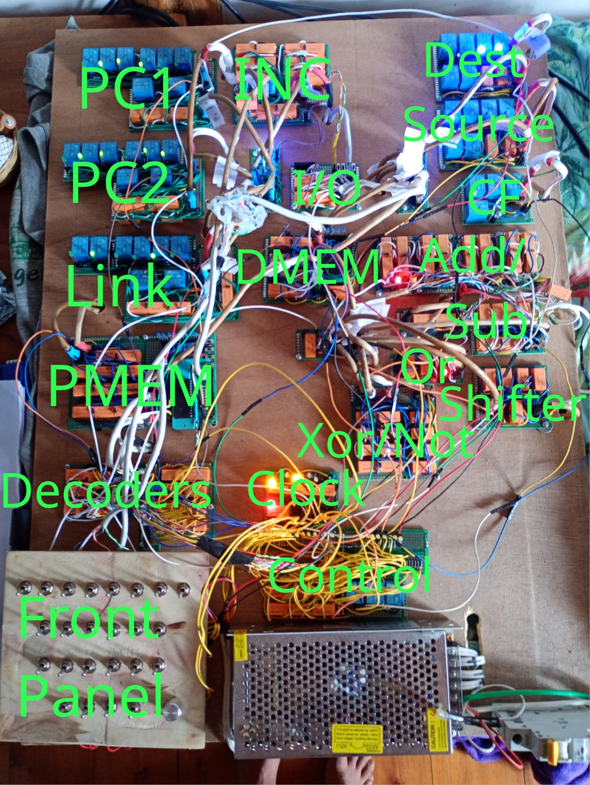

This is the story of how I designed and build my homebrew computer the D1 and I will also explain how it works.
So I wanted to build my own Homebrew CPU/Computer. I watched Ben Eater’s series on his 8-bit CPU. So I had a basic understanding on how a simple processor works and what it needs to function. But building someone else’s design is boring. I mean everybody can do that, am I right? So it was clear from the start that I would design my own CPU from scratch. Also I wanted to build a relay computer. All the blinking light’s and clicking relays really appealed to me. There is just something really satisfying about it. Btw I shamelessly stole Konrad Zuse’s naming conventions. See if you can figure that one out.
All the people that build programmable relay computers seam to be at least over 40. That’s not true for me. At the time of designing and building most of the D1 I was 15 and now I’m 16. Of course that means that unlike most other homebrew computer builders, I’m on a budged. So it was immediately clear that the computer would have to be very simple. Original I planed on building a 1-bit computer. But after some thought I realized that. A big chunk of the relays would go into the control unit and program counter. So I opted for a much more use full, tough still limited, 4-bits. The design process went like this: Come up with some ideas, draw some block diagrams and write down some things, think about it and realize that it wouldn’t work and do it again until the more or less final design emerged. Here you can see some of my early brainstorming. (Yes I know my handwriting looks terrible)

A lot of people think that designing a CPU is the hardest thing in the world. (Me included before I started learning about this stuff) And yes modern processors are REALLY complicated and I’m still far away from understanding all the pipelining, specular execution and register aliasing. That you need to build a modern super scalar x86 CPU. But you really don’t need all that much to build something that’s technically Turing complete. I say technically Turing complete because while the D1 is Turing complete you can only do so much with 64 instructions per program and 8 bytes of data memory.
I think here is a good point to start talking about the actual architecture of the D1. The D1 uses a Harvard architecture. Because that simplified the design a lot. Like I said the D1 works with 4-bit data. And has a 6-bit program memory (or PMEM) address space. Like I said before that limits us to 64 instructions per program. Every instruction is one byte long. You’re maybe thinking that 64 instructions per program isn’t a whole lot. And you would be right. But I managed to do a few things within these limitations. More on that later.
Before we continue let me talk about naming real quick. In my opinion there is no good word for 4-bits. I’ve heard it called a nibble. For example in the Intel 4004 manual. But that’s kinda weird so I’m going to invent my own word for it. From now on I will refer to 4-bits as a demi byte or dB (not to be confused with decibels) demi as in the Latin word for half. So a half byte. I think that makes much more sense than nibble.
So the D1 has 16 demi bytes of data memory (or DMEM). Which is of course 8 bytes. Here is a good point to mention that both PMEM and DMEM are NOT implemented using relays but. Using a EEPROM and SRAM IC respectively. There are 2 reasons for that. The first one is my sanity. I mean think about it I would have to build 16 or even worse 64 things that are exactly the same. Also there would be no learning effect in doing that. Since, well, your building the same thing over and over again. The Second and maybe more important reason is cost. I just would have been to expensive to build them out of relays, or dip switches in case of the program memory. And since the CPU it’s self still only consists of relays. I don’t have a huge problem with it.
Also I wasn’t trying to build something historically accurate. There are actually also a lot of diodes in the D1 and even a few MOSFET’s. Every relay has a protection diode because at the end of the day the electromagnet inside of a relay is just a inductor and if you switch inductors on and off they can generate voltage spikes and that’s no good. The relays probably wouldn’t care to much. But the LED’s and IC’s definitely wouldn’t enjoy it. Also all off the or gates are implemented using diodes. Like I said, I’m not trying to be historically accurate and I could save a few relays that way. The MOSFET’s are used in places where an IC has to switch a relay. Because there is no way that a pin of an IC can source the current that is necessary to switch a relay.
I build the D1 in a modular way. That was a very good choice. Since it allowed me to build one thing at a time. Without having to worry about everything else. All of the Modules are soldered on perf board and all the components are hand wired. The D1 consists of 166 relays. Yes that a LOT of work. The modules are connected to each other using old telephone/ethernet cable that I cut up and soldered connectors to the ends. That means it’s very easy to remove a module. Just unplug it.
I Also wrote an Assembler and Emulator in C while I was kind of right in the middle of building the D1. So that I could all ready write some programs for it. You can find them here and here. But I’m not a very good programmer. And they both suck and are probably very insecure. But at least I wrote it myself and did not vibe code it. Having a assembler even as bad as my one is still WAY better than writing machine code by hand. Also at the time of me writing this. There is no real documentation for them so you may have to look at the code to figure it out. I only used the standard library. So it should work on everything that has a C compiler. But I only tested it on the thing that I use. Which is of course Linux. So no guarantees.
Now let’s talk about the actual architecture of the D1. Here is a block diagram that I drew up:


Like I said it’s a Harvard architecture. But it’s a little different than your typical CPU. Like a typical Harvard architecture the D1 is split up into a data and a address site. On the data site there are 2 non-general purpose registers that can be used to modify data. The source and destination registers. They do pretty much exactly what you think they would. Every arithmetic instruction takes the source register as it’s first parameter. And if there is a second parameter that comes from DMEM directly. The result gets stored in the destination register. I’ll talk about the ISA later. There is also a carry flag.
On the address side of things there are 2 program counter registers (PC1, PC2). An 6-bit incrementer and the link register. You may ask “why the heck are there two program counters?” and that’s a very valid question. The reason is, that the registers that I use/build are not edge triggert meaning that we can’t just increment the program counter and store the result back into it. Having two registers solves this problem. The sequence to increment the program counter is as follows: Increment PC2 and store the result in PC1, then copy PC1 to PC2.
That brings us to the clock. The D1 uses a kind of weird 3 phaseish clock. Phase one is the “output phase”, phase two is the “input phase”, and phase three only gets used to transfer PC1 to PC2. Phase one and Phase two turn on at the same time. And then Phase two turns off first. That is very important. Since everything reads in data on Phase two. And if you would turn them both of at the same time, data could stop being outputed before it’s stop to read in. Resulting in reading in 0. I sadly did not manage to implement the clock circuit in relays. I simply could not get a a astable oscillator with a duty cycle of roughly 50% working with relays. I’m sure there is a way to do it. But for the life of me I could not figure it out. So I opted for a 555 timer ic instead. Going from the square wave that the 555 timer generates to the three phases that the CPU needs. Its done via an analog monstrosity consisting of diodes, capacitors, resistors and transistors that drive relays. It’s not pretty but it works. And I came up with it myself.
Going back to the registers we have the link register. As you may have guest it gets used for calling subroutines and returning back from them. Only having one means that the D1 can’t do nested calls. Which is actually not that limiting if you only have 64 instruction per program. Also the call instruction is also meant to be used as a unconditional jump. That’s pretty much it on the register.
Then we have the program memory. It gets directly addressed by PC2. And since every instruction is 1 byte long and we have our three clock phases, there’s no need for an instruction register. The output of PMEM then directly feeds into the two decoders. Why do we need two decoders? We’ll you gonna have to wait until we get to the instruction encoding. The Decoders only output something when phase one is high The output of the decoders then feeds into the control unit. Which basically consist of a bunch of diodes. And a couple of relays to switch some signals based on phase two. Handling the jump instructions is a little bit more involved. For example for the jump if not carry instruction the value of the carry flag has to be checked and only if it’s zero do the jump. Also when there is a jump the incrementer can’t output to the address bus. I managed to implement the “jumping” part of the control unit with three SPDT relays.
There are three “types” of instructions:
Jump instructions
DMEM instructions
No parameter instructions
There are two jump type instructions, jump not carry (jnc) and call. They do pretty much exactly what you’d expect them to do. JNC jumps to the given address if the carry flag is not set and call copies program counter plus one to the link register and then jumps to the given address. The upper bit of jump instructions is always set. The sixth bit determines what jump instruction it is and the lower six bits are the address.
Next we have DMEM instructions. Instructions that use DMEM. There lower demibyte is the DMEM address that the instruction uses. Or the case of ldi the immediate. And the upper demibyte is a value 1-7 to determine what instruction it is (it’s the opcode). DMEM instructions are: add, subtract (sub), xor, or, load immediate (ldi), move destination ram (mdr), move ram source (mrs)
The arithmetic/logical instructions always take source as there first operand and DMEM[address] as there second one and store the result in dest. LDI loads a immediate into dest. MDR and MRS do exactly what the name implies. (yes I was inconsistent with the naming of DMEM. What you gonna do about it?)
Finally we have the no parameter instruction. That have, wait for it, no parameters. There upper demibyte is 0 and the lower one is the opcode. No parameter instructions are: halt, return (ret), move destination source (mds), not, right shift (rsh), left shift (lsh), right rotate (rro), left rotate (lro), in, out
Again they do pretty much what you expect them to do. Halt halts the cpu. Return copies the link register into the program counter. The logical instructions use source as there operand and store the result in dest. The shift instructions shift the value in the specified direction by one bit. And the carry flag gets set to whatever the shifted lost bit was. The rotate instructions to the same thing except that they don’t modify the carry flag and instead of shifting in zero they shift in the lost bit. I forgot to mention the input output thing earlier. Basically in reads from switches on the front panel and stores it into the dest register. And output is currently not used by anything. But it would output the contends of dest to somewhere. Like a said it’s not used currently.
On the topic of not used, there are actually quite a few no-parameter-instructions that don’t do anything. Maybe I’m going to do something with them in the future we’ll see.
Oh yeah. The front panel exists. You can program the D1 from there by selecting an address and data on toggle switches. Or inspect the contends of both memories. Also like I said it has 4 extra switches for the input. The is also a potentiometer there to adjust the clock speed.
Here’s a full list of all instructions and there op codes (a=DMEM address, i=immediate, j=PMEM address):
| Mnemonic | Opcode in binary |
|---|---|
| JNC | 10jjjjjj |
| CALL | 11jjjjjj |
| ADD | 0001aaaa |
| SUB | 0010aaaa |
| XOR | 0011aaaa |
| OR | 0100aaaa |
| LDI | 0101iiii |
| MDR | 0110aaaa |
| MDS | 0111aaaa |
| HALT | 00000000 |
| RET | 00000001 |
| MDS | 00000010 |
| NOT | 00000011 |
| RSH | 00000100 |
| LSH | 00000101 |
| RRO | 00000110 |
| LRO | 00000111 |
| IN | 00001000 |
| OUT | 00001001 |
There are three “demos” that I wrote for the D1. 4-bit multiplication, 4-bit division and kill the bit the game from the Altair 8800. I’m not going to explain the implementation of these programs. But you can find the code here. Multiplication and division both take around 5 minutes to complete. Pretty slow but what did you expect? And kill the bit runs so painfully slow that it’s quite boring to play. But at least it works. Here are some videos of the Computer running these programs. (Feel free to skip ahead if you don't want to watch 5 minutes of blinking lights)
I am definitely not done building stuff. And if I feel like it I’m gonna document it here. I’m already designing the D2 and it’s going to be MUCH MUCH faster so stay tuned for that. Also if you have any question or just want to get in touch with me send me an email at zteid.ito@proton.me See y’all!